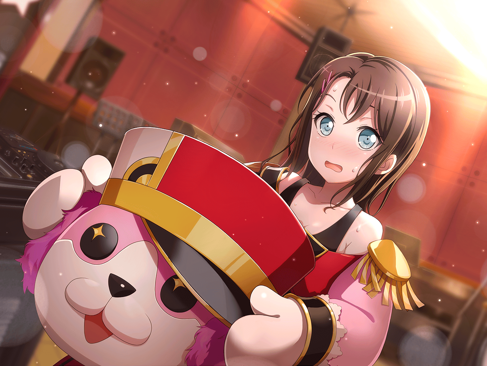

ミッシェル
…………
……暑い……
ミッシェル
通気性ゼロ、視界不良、動作のさまたげになる重さ。
どう考えてもこれは、『バンド』としておかしい……
——やっぱ無理
はぐみ
みんなまだかなぁ？
あ。そういえばミッシェルって、コロッケ好きっ？
はぐみ
——ってうわああああああああああ！！
また！ またミッシェルがっ、
ミッシェルがクマなのか女の子なのかなんなのかわああああ
美咲
ちょちょ、落ち着いてよはぐみっ、
このお茶飲むだけだから、暑くて死んじゃうから
はぐみ
ミ、ミッシェル死んじゃったの！？
ええええええ！？
美咲
殺すな生きてるわ。
ちょっとミッシェルは休んでるだけ！
オーケー？
はぐみ
う、うぅ～～っ。
キグルミの人、
どうしていつも急にミッシェルを隠しちゃうのっ？
美咲
いやだから……はぁ。
隠してないしちゃんとここにいるんだけどな。
何回言ったらこの人達通じんのかな……
はぐみ
隠してるよっ。どこにいるの？
それともミッシェルは隠れたいの？
ハロー、ハッピーワールド！ のメンバーなのに？
はぐみ
はっ！！ も、もしかしてミッシェルは
はぐみ達と練習したくない！？
……メンバーはみんな仲間なのに……
美咲
あーもー！！
だからあたしもメンバーだっつう……
——！！
美咲
（な、なに言ってんだあたし。
こんな変な団体、さっさと抜けるのに……）
はぐみ
今日はせっかく、
練習の初めからミッシェルがいたのに……
はぐみ、たくさんお話したかったのに……
美咲
もーわかったよ面倒くさいな。
ほら、そっちむいて１０数えて。
あなた達のミッシェル出すから
はぐみ
本当！？ わかった！！
いーち、にー、さーん……
ミッシェル
は、はぐみちゃーん。
ミ、ミッシェルだよー。
どうもこんにちはーーー♪
はぐみ
わああああ！
ミッシェルーーー！ よかったーー！
えぐっ。死んじゃったのかと思ったよぉ～
ミッシェル
ミッシェルは死なないから大丈夫だよはぐみちゃーん
ミッシェル
（てかキグルミが生きるも何もないよ。
と言いたいけど、言ったらはぐみの
大切な何かを壊しそうでなんだか言えないこの不思議……）
ミッシェル
（こういうのはうちの妹で慣れてる。
できるだけ子供の夢を壊さないように……）
ミッシェル
……ってあんた同い年だよねあたしと！
なんだよ。
なんかつい出ちゃったよ長女癖
はぐみ
ミッシェルも高校一年生なの！？
一緒だね～！ はぐみも長女だし！ お兄ちゃんいるけど！
ミッシェルもきょうだいがいるの？
ミッシェル
えっ。まあ、そうだね。
……妹がいる、かな
はぐみ
妹！ いいなあ。女の子きょうだいうらやましい！
ミッシェルの妹だから、
きっとすっごくかわいいんだろうね！
ミッシェル
ま……まあ、ふふん。そうだね。
うちの妹はあたしみたいにひねくれてないし、
お姉ちゃんお姉ちゃんって、かわいいもんで……
はぐみ
きっとモッフモフのふっかふかで、
ミッシェルと同じでピンクでいい匂いで……
ミッシェル
……ってうちの妹までクマにするな！
はぐみ
えっ。だって、クマの姉妹なんだから、
妹もクマじゃないの？
ミッシェル
どっちもクマじゃないって、だから！！
――あ。まずい
はぐみ
え……ミ、ミッシェルって、クマじゃないの？
はぐみ、ずっとそうだと……
え……じゃあミッシェルって……なに……？
ミッシェル
……え。なにって……
はぐみ
…………
ミッシェル
（……あたし、暑くても
がんばってキグルミ着て動いてるのに、
なんでこんなに怯えられてるんだろう）
はぐみ
…………
ミッシェル
（そしてクマがまっピンクで
二本足で立って話すことは、
はぐみの中では別におかしくないの？）
ミッシェル
だ……だから、なんていうか、その……
ミ、ミッシェルは特別なクマなんだよ～
はぐみ
とくべつ？ ……あ！
もしかして、魔法？
ミッシェルは魔法のクマさんなの！？
ミッシェル
そっ、そうそう！
そう……なのかな？
——まあ、そう。大体そんな感じ！
はぐみ
そうなんだ！
ミッシェルはクマはクマでも
魔法のクマだったんだね！！！！
ミッシェル
うん！ すごいあっさり信じたね！
はぐみ
じゃあもしかして、ふつうのクマやはぐみ達とは
ちがう、魔法の世界に住んでるの？
ミッシェル
う、うーん。それもそんな感じかな～？
はぐみ
じゃあ！
いつもご飯はどんなもの食べてる？
ねどこは？ 空の上だったりする？
ミッシェル
えっ。え～。そ、そうだなぁ～。ハ、ハチミツが好きかなぁ？
それとぉ～……、ねどこは家……いや、
木の……そう、木のおうちだよ～？
はぐみ
そうなんだぁ……！
じゃあピンクでモフモフで、目がくるんとしてて、
鼻がツヤツヤなのにも、魔法の理由があるのっ？
ミッシェル
えっ。えーと……
はぐみ
どんな？ どんな理由っ？
ミッシェル
（そ、そんな細かい設定、いま作るの？）
ミッシェル
ピ、ピンクなのは～、お花の妖精さんと仲良しだからだよっ。
ちょうちょやお花をたくさん見るために、
くるんとした目とツヤツヤの鼻が必要なんだぁ～
はぐみ
お花の……妖精……！！
ミッシェル
（よかった。納得してもらえたようだ）
はぐみ
すごいなぁミッシェルは。
ピンクでかわいいし。はぐみ実はすっごく、
ミッシェルのことうらやましいんだ
ミッシェル
（……え？
理由もなしに懐いてるのかと思ってたけど、
違うのかな……？）
はぐみ
はぐみ、ピンクなんてぜったい似合わないでしょ。
よく男子に間違われるし……
だから本当は、ミッシェルみたいになりたいんだ
ミッシェル
（——いや、え？ これクマだけど？
……って、まあ……３バカなんて呼んでたけど、
はぐみなりに色々あるんだな……）
ミッシェル
……ミッシェルもね、
こんな……クマだけど、本当はクマっぽくない、
ふわふわしたものが好きだったりするよ
はぐみ
えっ。そうなの
ミッシェル
うん。妹の為に羊毛フェルトでぬいぐるみ作ってるけど、
本当は自分も好きだし。でも、自分にぬいぐるみなんて
似合わないから、恥ずかしくて、妹にあげちゃうんだ
はぐみ
あっ。はぐみも、かわいいお菓子とか、
自分より女の子っぽい子にあげっちゃったりする……
ミッシェル
でもはぐみちゃんはクマじゃなくて、
女の子だから、これからどんどんかわいくなるよ。
ミッシェルはクマだから……これからもずっと、クマだけど
はぐみ
ミッシェルはクマでも、すっごいかわいいよ！？
ミッシェル
うん……そうだね。
だからミッシェルもはぐみちゃんも、
これからもっとかわいくなるよ。楽しみだね